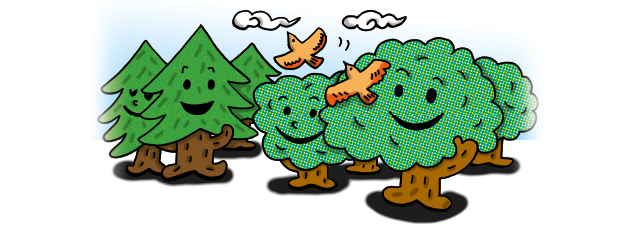
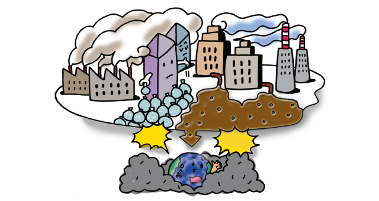

El planeta Tierra ¿está lleno de basura?

Actualmente habitamos el planeta Tierra más de 7.000 millones de personas, y todos generamos diariamente residuos. Si tenemos en cuenta que en promedio cada ciudadano produce aproximadamente 1 kg de residuos por día, podemos darnos cuenta que entre todos generamos millones de toneladas de residuos diariamente.
Los residuos tardan muchos años en descomponerse, y al hacerlo pueden contaminar el suelo, el aire y el agua.
En la Ciudad de Buenos Aires la mayoría de los residuos son transportados hasta los rellenos sanitarios donde son enterrados. Una parte de los residuos reciclables son recuperados por los recuperadores urbanos y llevados a los Centros Verdes.
Las industrias que compran residuos los utilizan para producir bienes reciclados, como por ejemplo baldes, cartulinas, botellas de vidrio, papel higiénico y muchos otros. Así evitan comprar materias primas vírgenes extraídas de la naturaleza, como por ejemplo la madera de los árboles.
En las escuelas de la CABA los alumnos separan los residuos en «basura» y «residuos reciclables». De esta manera colaboran para que una mayor cantidad de residuos sean reciclados y para reducir la cantidad de basura que es enterrada diariamente en los rellenos sanitarios.

¿Qué podemos hacer nosotros?
Podemos consumir responsablemente, lo cual significa ser conscientes del impacto ambiental, social y económico de los productos y servicios que elegimos.
También podemos separar los residuos, utilizar las 3 Rs (reducir, reutilizar y reciclar) y compostar los residuos orgánicos.
• Separar en origen. Es indispensable separar los residuos correctamente en reciclables, que se depositan en los cestos y contenedores verdes, y en basura, que se coloca en los cestos y contenedores negros.
• Reducir significa disminuir la cantidad de residuos que generamos.
• Reutilizar significa darle un nuevo uso al residuo antes de desecharlo, sin modificar su estructura. Por ejemplo usando las hojas de papel de ambos lados y recargando las botellas de agua.